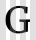

<!DOCTYPE html><html><head><title>Graaf, a collection of pure CSS grid overlays</title><meta name="viewport" content="width=device-width, initial-scale=1"><meta name="description" content="A collection of pure CSS grid overlays for designing your new projects."><meta name="theme-color" content="#ffffff"><link rel="apple-touch-icon" sizes="180x180" href="/apple-touch-icon.png"><link rel="icon" type="image/png" href="/favicon-32x32.png" sizes="32x32"><link rel="icon" type="image/png" href="/favicon-16x16.png" sizes="16x16"><link rel="manifest" href="/manifest.json"><link rel="mask-icon" href="/safari-pinned-tab.svg" color="#5bbad5"><link rel="stylesheet" href="https://fonts.googleapis.com/css?family=Merriweather|Open+Sans:400,400i,700"><link rel="stylesheet" href="/style.css"><script src="/graaf.js"></script></head></html><body><a href="https://github.com/Angelmmiguel/graaf" class="github-corner" aria-label="View source on Github"><svg width="80" height="80" viewBox="0 0 250 250" style="fill:#151513; color:#fff; position: absolute; top: 0; border: 0; right: 0;" aria-hidden="true"><path d="M0,0 L115,115 L130,115 L142,142 L250,250 L250,0 Z"></path><path d="M128.3,109.0 C113.8,99.7 119.0,89.6 119.0,89.6 C122.0,82.7 120.5,78.6 120.5,78.6 C119.2,72.0 123.4,76.3 123.4,76.3 C127.3,80.9 125.5,87.3 125.5,87.3 C122.9,97.6 130.6,101.9 134.4,103.2" fill="currentColor" style="transform-origin: 130px 106px;" class="octo-arm"></path><path d="M115.0,115.0 C114.9,115.1 118.7,116.5 119.8,115.4 L133.7,101.6 C136.9,99.2 139.9,98.4 142.2,98.6 C133.8,88.0 127.5,74.4 143.8,58.0 C148.5,53.4 154.0,51.2 159.7,51.0 C160.3,49.4 163.2,43.6 171.4,40.1 C171.4,40.1 176.1,42.5 178.8,56.2 C183.1,58.6 187.2,61.8 190.9,65.4 C194.5,69.0 197.7,73.2 200.1,77.6 C213.8,80.2 216.3,84.9 216.3,84.9 C212.7,93.1 206.9,96.0 205.4,96.6 C205.1,102.4 203.0,107.8 198.3,112.5 C181.9,128.9 168.3,122.5 157.7,114.1 C157.9,116.9 156.7,120.9 152.7,124.9 L141.0,136.5 C139.8,137.7 141.6,141.9 141.8,141.8 Z" fill="currentColor" class="octo-body"></path></svg></a><style>.github-corner:hover .octo-arm{animation:octocat-wave 560ms ease-in-out}@keyframes octocat-wave{0%,100%{transform:rotate(0)}20%,60%{transform:rotate(-25deg)}40%,80%{transform:rotate(10deg)}}@media (max-width:500px){.github-corner:hover .octo-arm{animation:none}.github-corner .octo-arm{animation:octocat-wave 560ms ease-in-out}}</style><main><div class="container"><header><div class="logo"></div><p class="slogan">A collection of <strong>pure CSS grid overlays</strong> for designing</p><p class="sub-slogan">Just link the CSS that fits your grid
</p></header></div><section class="try"><div class="container"><button onClick="guideGrid(this); return false;" data-step="0">Try it</button><p class="description">This button will add the following code to the <code>head</code> HTML tag.</p><pre class="example"><code>&lt;link rel="stylesheet" href="//s3-eu-west-1.amazonaws.com/graaf/graaf.css"&gt;
</code></pre></div></section><div class="container"><table class="grids" cellspacing="0"><thead><tr><th></th><th><span class="hide-mobile">Width</span></th><th><span class="hide-mobile">Columns</span></th><th><span class="hide-mobile">Gutter</span></th><th></th></tr></thead><tbody><tr><td>BBC News</td><td class="row-center">976px</td><td class="row-center">12</td><td class="row-center">16px</td><td><a href="https://s3-eu-west-1.amazonaws.com/graaf/bbc.css?v=0.2.2">bbc.css</a></td></tr><tr><td>Bootstrap</td><td class="row-center">1170px</td><td class="row-center">12</td><td class="row-center">16px</td><td><a href="https://s3-eu-west-1.amazonaws.com/graaf/bootstrap.css?v=0.2.2">bootstrap.css</a></td></tr><tr><td>CNN Inter.</td><td class="row-center">1100px</td><td class="row-center">7</td><td class="row-center">20px</td><td><a href="https://s3-eu-west-1.amazonaws.com/graaf/cnn.css?v=0.2.2">cnn.css</a></td></tr><tr><td>Dribbble</td><td class="row-center">970px</td><td class="row-center">4</td><td class="row-center">30px</td><td><a href="https://s3-eu-west-1.amazonaws.com/graaf/dribbble.css?v=0.2.2">dribbble.css</a></td></tr><tr><td>Github</td><td class="row-center">980px</td><td class="row-center">12</td><td class="row-center">20px</td><td><a href="https://s3-eu-west-1.amazonaws.com/graaf/github.css?v=0.2.2">github.css</a></td></tr><tr><td>Graaf</td><td class="row-center">793px</td><td class="row-center">10</td><td class="row-center">16px</td><td><a href="https://s3-eu-west-1.amazonaws.com/graaf/graaf.css?v=0.2.2">graaf.css</a></td></tr><tr><td>Harvard</td><td class="row-center">1176px</td><td class="row-center">12</td><td class="row-center">20px</td><td><a href="https://s3-eu-west-1.amazonaws.com/graaf/harvard.css?v=0.2.2">harvard.css</a></td></tr><tr><td>HBO</td><td class="row-center">1184px</td><td class="row-center">12</td><td class="row-center">24px</td><td><a href="https://s3-eu-west-1.amazonaws.com/graaf/hbo.css?v=0.2.2">hbo.css</a></td></tr><tr><td>Medium</td><td class="row-center">1000px</td><td class="row-center">3</td><td class="row-center">18px</td><td><a href="https://s3-eu-west-1.amazonaws.com/graaf/medium.css?v=0.2.2">medium.css</a></td></tr><tr><td>NY Times</td><td class="row-center">970px</td><td class="row-center">5</td><td class="row-center">16px</td><td><a href="https://s3-eu-west-1.amazonaws.com/graaf/nytimes.css?v=0.2.2">nytimes.css</a></td></tr><tr><td>Product Hunt</td><td class="row-center">1070px</td><td class="row-center">8</td><td class="row-center">20px</td><td><a href="https://s3-eu-west-1.amazonaws.com/graaf/producthunt.css?v=0.2.2">producthunt.css</a></td></tr><tr><td>Soundcloud</td><td class="row-center">1180px</td><td class="row-center">12</td><td class="row-center">20px</td><td><a href="https://s3-eu-west-1.amazonaws.com/graaf/soundcloud.css?v=0.2.2">soundcloud.css</a></td></tr><tr><td>The guardian</td><td class="row-center">1100px</td><td class="row-center">14</td><td class="row-center">20px</td><td><a href="https://s3-eu-west-1.amazonaws.com/graaf/theguardian.css?v=0.2.2">theguardian.css</a></td></tr><tr><td>Twitter</td><td class="row-center">1190px</td><td class="row-center">4</td><td class="row-center">10px</td><td><a href="https://s3-eu-west-1.amazonaws.com/graaf/twitter.css?v=0.2.2">twitter.css</a></td></tr></tbody></table></div><div class="container"><section class="usage"><h2>Usage</h2><div class="usage-block"><h3>Projects</h3><p>Graaf doesn't have any external dependency. To add it to your project, you only
need to select the grid that fits for your design and link the stylesheet in
your <code>head</code> HTML tag. For example, if you want to add <em>graaf</em>
grid overlay, just copy the following code in your <code>head</code> tag:</p><pre><code>&lt;link rel="stylesheet" href="//s3-eu-west-1.amazonaws.com/graaf/graaf.css"&gt;
</code></pre></div><div class="usage-block"><h3>Codepen</h3><p>In <a target="_blank" href="https://codepen.io">Codepen</a> you can link a grid
overlay in the project settings. Check the following image and this
<a target="_blank" href="http://codepen.io/angelrb/pen/XpRBYv">pen</a>.</p><p class="image"></p></div></section></div></main><footer><div class="container">This is an <a target="_blank" href="https://github.com/Angelmmiguel/graaf/">Open Source project</a>.
By <a target="_blank" href="https://twitter.com/laux_es" target="_blank">Angel</a>.</div></footer><script>(function(i,s,o,g,r,a,m){i['GoogleAnalyticsObject']=r;i[r]=i[r]||function(){
(i[r].q=i[r].q||[]).push(arguments)},i[r].l=1*new Date();a=s.createElement(o),
m=s.getElementsByTagName(o)[0];a.async=1;a.src=g;m.parentNode.insertBefore(a,m)
})(window,document,'script','https://www.google-analytics.com/analytics.js','ga');

ga('create', 'UA-47913999-8', 'auto');
ga('send', 'pageview');</script></body>